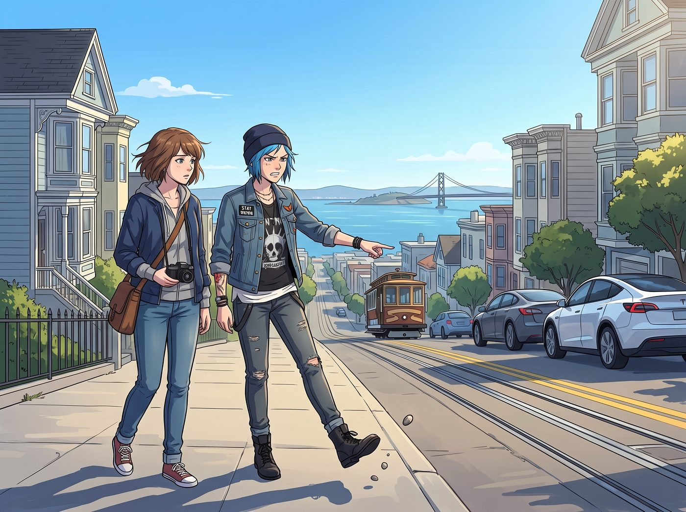
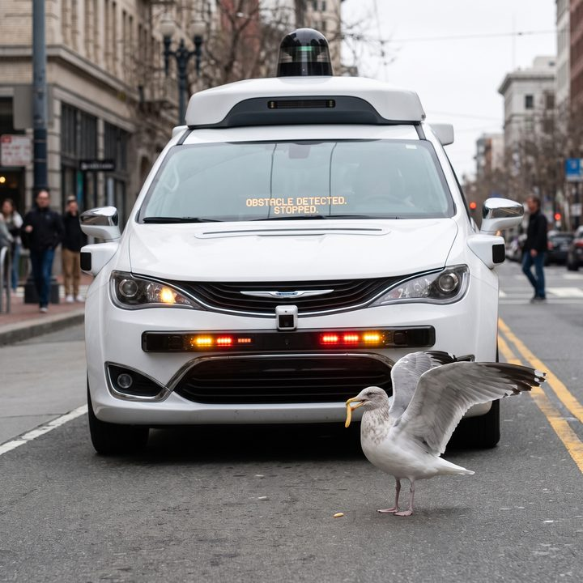

海鷗與無人車


從 Visa 總部那令人窒息的空調房裡逃出來後，舊金山街頭帶著鹹味的海風終於讓 Chloe 和 Max 找回了碳基生物的呼吸節奏。
但這份輕鬆並沒有持續太久。兩個人沿著起伏的馬路閒逛，Chloe 的眉頭越皺越緊，腳步也變得越來越暴躁。
「這座城市徹底失去靈魂了，Max。」Chloe 煩躁地踢飛了一顆小石子，指著馬路上一輛輛悄無聲息滑過的電動車，「沒有V8引擎的轟鳴，沒有排氣管的黑煙，甚至連換擋時那種機械咬合的頓挫感都沒有！整條街安靜得像個巨大的蘋果門市，這些車聽起來就像是幾千台正在震動的刮鬍刀！」
一、被四個輪子的電腦滑鼠逼停
這時，一輛頂著不斷旋轉的光達感測器、車身印著自動駕駛標誌的白色測試車，以一種極度遵守交通規則、平穩得令人髮指的姿態，緩緩停在了她們面前的斑馬線前。車裡空無一人，方向盤卻像被幽靈操控一樣，精準地自動回正。
「老天啊，妳看這個白痴機器。」Chloe 翻了個巨大的白眼，走到車頭前，誇張地揮了揮手，「它看起來就像一個長了四個輪子的巨大電腦滑鼠！沒有人在駕駛室裡抽菸，沒有人對著慢吞吞的行人按喇叭比中指。這種絕對的安全和守規矩，簡直就是對街頭文化的物理閹割！」
面對 Chloe 對現代科技的無能狂怒，Max 卻沒有附和。這個堅定的類比純粹主義者，正抱著她那台老舊的拍立得相機，透過取景器，安靜地觀察著這輛造價高達數十萬美金的自動駕駛原型車。
Max 能在這種被矽谷演算法統治的無菌街道上找到快樂嗎？答案是肯定的，因為攝影師的眼睛，永遠在尋找系統裡的瑕疵。
「Chloe，別動。退後一步。」Max 突然輕聲說道。
二、系統的漏洞
Chloe 愣了一下，乖乖地往後退了一步，站到了人行道邊緣。
就在這時，一隻體型肥碩、完全不怕人的舊金山海鷗，撲騰著翅膀降落在了車頭正前方的一英尺處。這隻海鷗嘴裡叼著半根不知道從哪裡撿來的薯條，就這麼大搖大擺地站在馬路正中央，開始慢條斯理地進食。
車頂的雷達瘋狂旋轉，車頭的感測器指示燈狂閃。這台搭載了全球最頂尖人工智慧、每秒能進行數萬億次浮點運算、連線著無數超級電腦的自動駕駛汽車……被一隻吃薯條的胖海鷗徹底逼停了。
系統的底層邏輯告訴它，前方有生命體障礙物，絕對不能前進。於是，這台科技巨獸只能像個受委屈的機器僕人一樣，在一隻鳥面前無助地原地怠速，連喇叭都不敢按一聲，生怕違反了噪音管制法規。
「咔嚓——」
Max 毫不猶豫地按下了快門。閃光燈亮起，將這荒謬至極的一幕定格在了底片上。
「妳看，Chloe。」Max 拿著緩緩吐出的底片，嘴角揚起了一抹無比燦爛且狡黠的微笑，「矽谷的那些天才工程師花了幾百億美金，寫了幾千萬行的代碼，試圖創造一個沒有車禍、沒有違規、絕對完美的數位烏托邦。」
Max 輕輕甩著底片，看著畫面中那台被海鷗逼停的無人車逐漸顯影：「但現實是，這個耗資百億的完美演算法，依然得乖乖停下來，等一隻毫無邏輯、隨地拉屎的碳基海鷗把它的薯條吃完。這難道不是世界上最龐克、最浪漫的畫面嗎？」
三、文青的高維視角
Chloe 呆呆地看著那隻海鷗，又看了看那台不知所措的無人車，隨後爆發出了一陣無法抑制的狂笑。
「哈哈哈哈哈！Maxine，妳簡直是個天才！」Chloe 笑得直不起腰，她一把摟住 Max 的肩膀，狠狠地在她的臉頰上親了一口，「妳說得對！管它什麼狗屁演算法和雷達，這個充滿瑕疵的碳基世界永遠能把這些冰冷的代碼耍得團團轉！」
在尋找快樂這件事上，Max 展現出了與實習生 Lily 完全不同的高維度視角。Lily 是用魔法打敗魔法，用合規去摧毀系統；而 Max，則是帶著一種文青的悲憫與幽默感，靜靜地看著這些高科技產物在自然法則面前吃癟。
海鷗終於吃完了薯條，滿意地拍打著翅膀飛走了。無人車這才如釋重負地重新啟動，像個呆頭呆腦的機器人一樣緩緩駛過路口。
Max 將那張寶麗來照片小心翼翼地塞進皮夾克口袋裡。她牽起 Chloe 的手，迎著舊金山的冷風繼續往前走。在這個充滿了電動車和人工智慧的矽谷後花園裡，這兩個來自廢土車廂的女孩，終於用一張底片和一隻海鷗，狠狠地嘲笑了這個自以為是的數位時代。